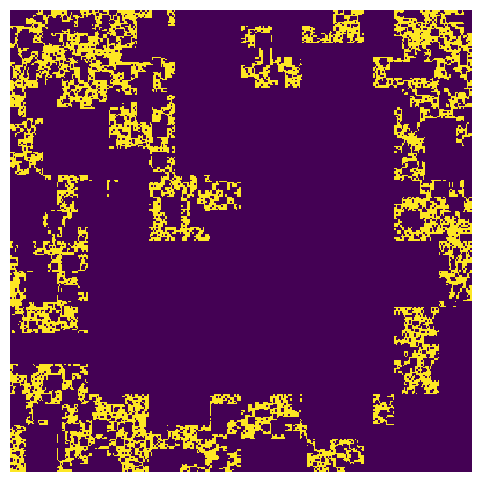
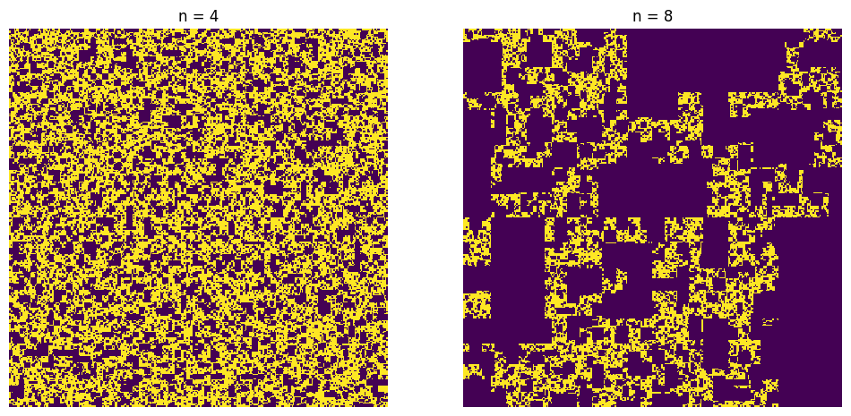
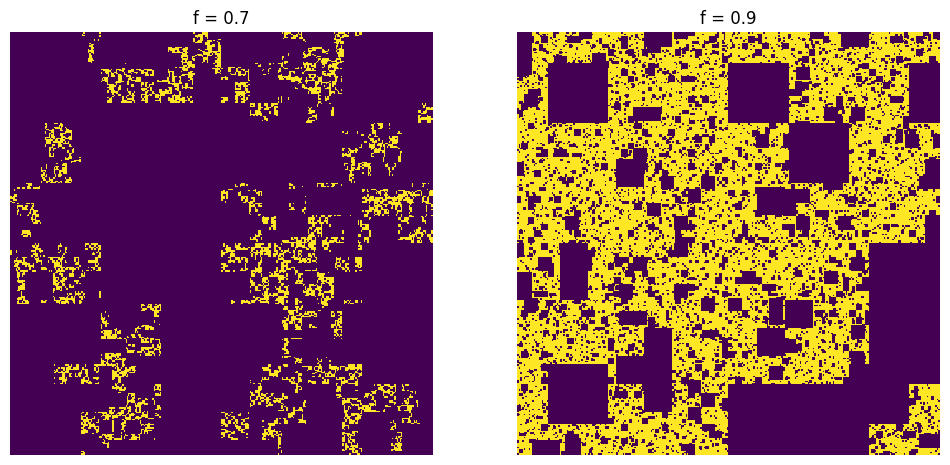
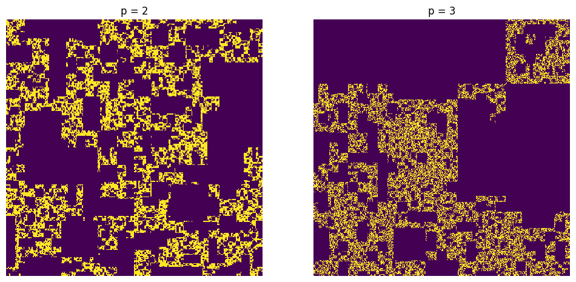

random_cantor_dust#
This generates a fractal image by iteratively and randomaly removing segments at successively large scales.
import inspect
import matplotlib.pyplot as plt
import porespy as ps
inspect.signature(ps.generators.random_cantor_dust)
<Signature (shape, n: int = 5, p: int = 2, f: float = 0.8, seed: int = None)>
shape#
The shape of the image can either be 2D or 3D:
fig, ax = plt.subplots(1, 1, figsize=[6, 6])
im = ps.generators.random_cantor_dust(shape=[500, 500], n=8)
ax.imshow(im, interpolation='none')
ax.axis(False);

n#
The number of scales to bisect the image, with higher numbers leading to large features. The algorithm starts by dividing a p x p region and randomly setting some quadrants to False. It proceeds by increasing the region size and repeating. n controls the number of iterations at larger scales.
fig, ax = plt.subplots(1, 2, figsize=[12, 6])
n = 4
im = ps.generators.random_cantor_dust(shape=[500, 500], n=n)
ax[0].imshow(im, interpolation='none')
ax[0].axis(False)
ax[0].set_title(f'n = {n}')
n = 8
im = ps.generators.random_cantor_dust(shape=[500, 500], n=n)
ax[1].imshow(im, interpolation='none')
ax[1].axis(False)
ax[1].set_title(f'n = {n}');

f#
The probability that a quadrant survives the process (i.e. set to True)
fig, ax = plt.subplots(1, 2, figsize=[12, 6])
f = 0.7
im = ps.generators.random_cantor_dust(shape=[500, 500], n=n, f=f)
ax[0].imshow(im, interpolation='none')
ax[0].axis(False)
ax[0].set_title(f'f = {f}')
f = 0.9
im = ps.generators.random_cantor_dust(shape=[500, 500], n=n, f=f)
ax[1].imshow(im, interpolation='none')
ax[1].axis(False)
ax[1].set_title(f'f = {f}');

p#
The size of the initial region, which is scaled by a factor of p on each step
fig, ax = plt.subplots(1, 2, figsize=[12, 6])
p = 2
im = ps.generators.random_cantor_dust(shape=[500, 500], n=8, p=p)
ax[0].imshow(im, interpolation='none')
ax[0].axis(False)
ax[0].set_title(f'p = {p}')
p = 3
im = ps.generators.random_cantor_dust(shape=[500, 500], n=8, p=p)
ax[1].imshow(im, interpolation='none')
ax[1].axis(False)
ax[1].set_title(f'p = {p}');
